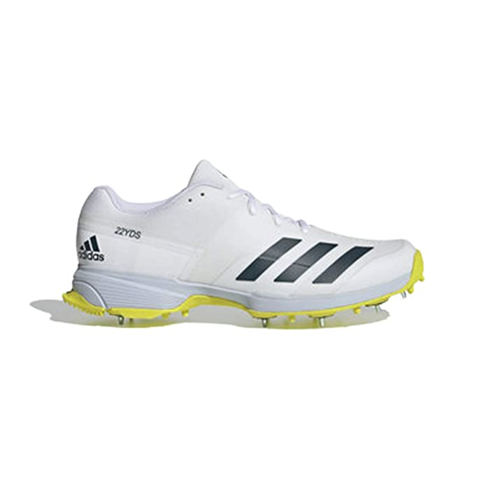
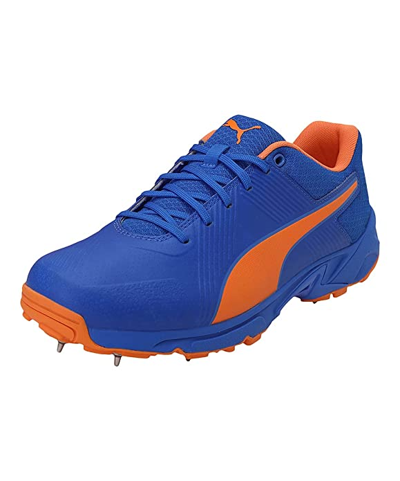
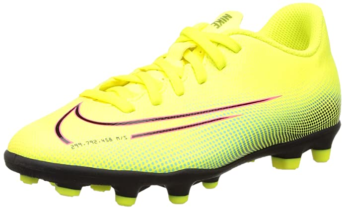
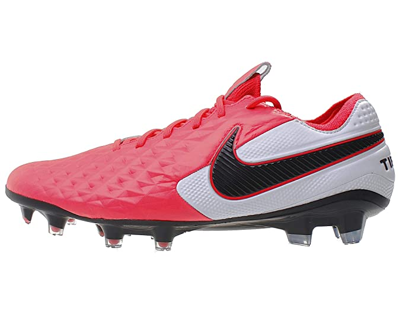

Sports shoes are mandatory resources when it comes to sports activities of any kind, such as football,
badminton, cricket, basketball, boxing, running, etc. Whether you are a professional or a casual sports player,
a pair of training footwear for men can make a big difference. They are specially crafted for specific sports
activities. Browse through the varieties of soccer footwear, motorsport footgear, hockey sneakers, running
footwear, etc. They are available with varied themes, colours, materials, and soles.

These are rubber soles , lace up , highly cushioned 9 spiked Adidas Men's Sl22.0 Cricket Shoe. If you are a
cricket player its all you need in a ground. These are of Rs. 8550

These are Puma Men's Spike 19.2 Bluemazing-Orange Glow-hi Cricket Shoes. These are rubber soles , lace up ,
medium cushioned shoes which can be yours in just Rs 6449

These are medium cushioned lace up Nike Boys Jr Vapor 13 Club MDS Fg/Mg Football Shoes. These Lemon
Venom/Black-Aurora Green shoes can be yours in just 2500 Rs.

These are Nike Unisex Legend Elite Fg Football Shoes which are Laser Crimson/Black-White in colour. They are
premium football shoes for pull on closure. These shoes are best in class and can be yours in just Rs 17000
These are Nike Unisex Legend Elite Fg Football Shoes which are Laser Crimson/Black-White in colour. They are
premium football shoes for pull on closure. These shoes are best in class and can be yours in just Rs 17000